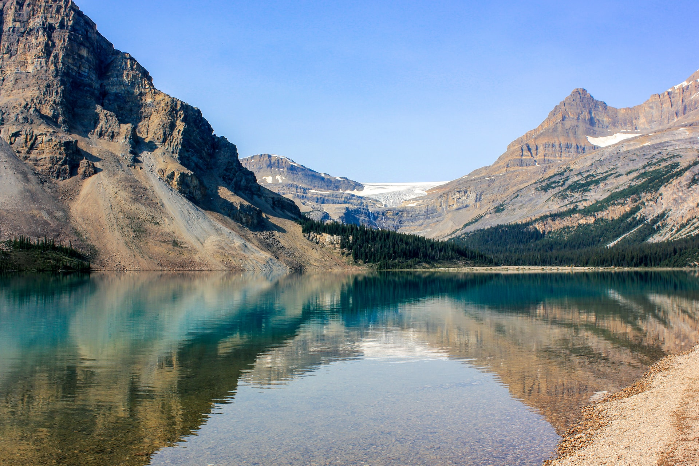
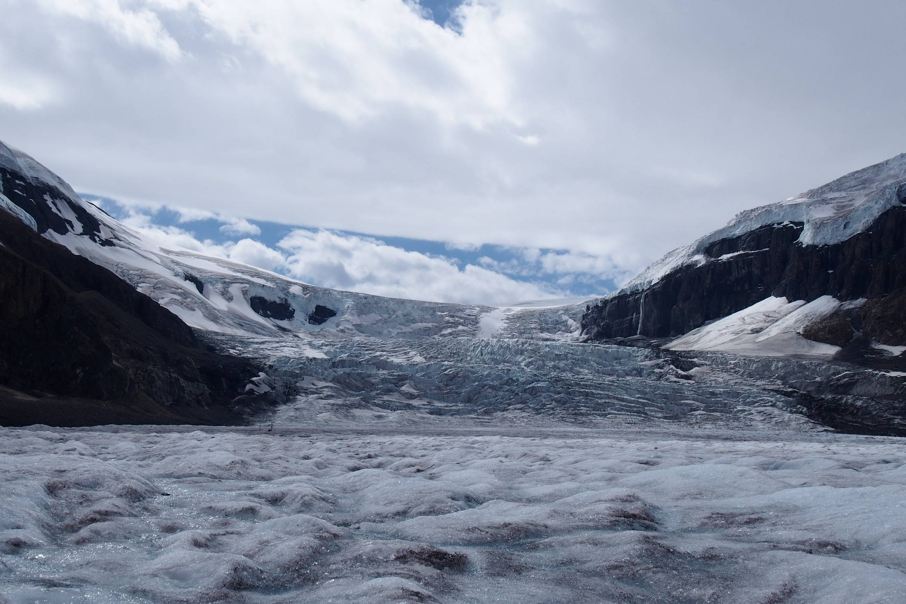
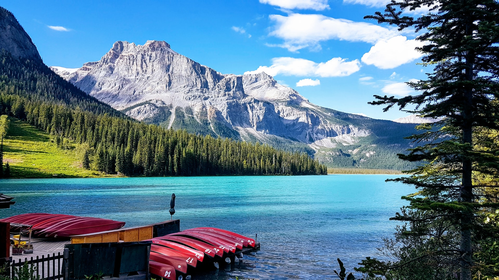
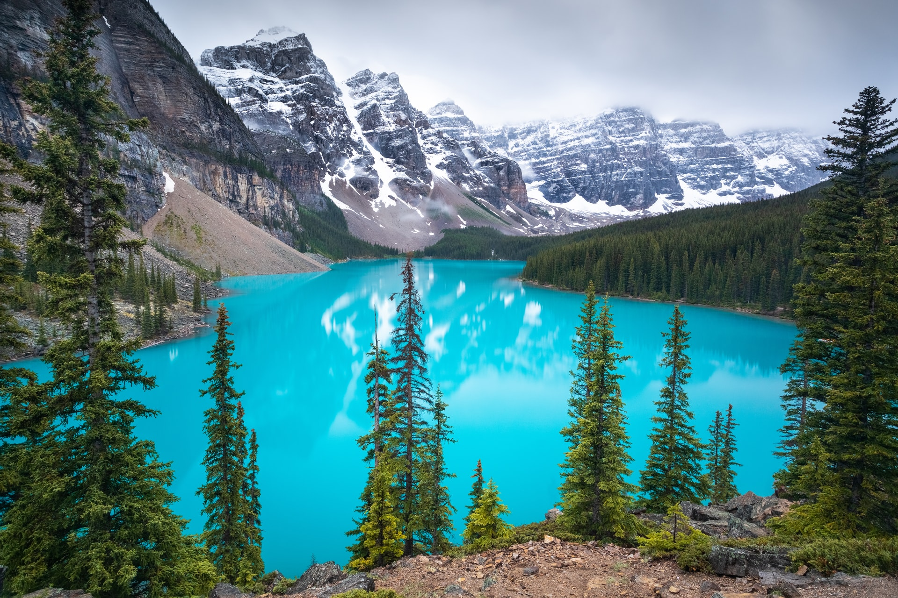
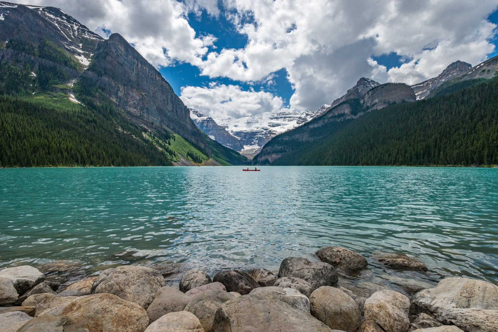
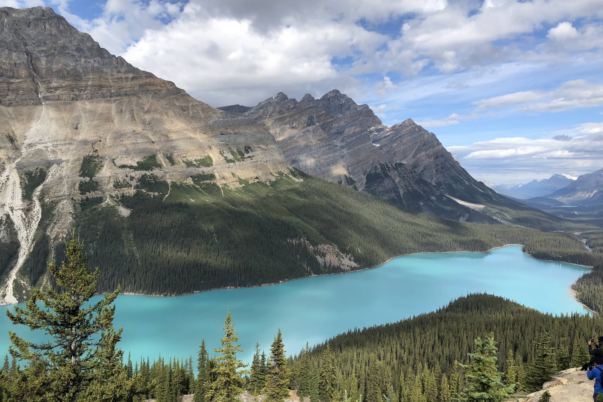

Attractions
Bow Lake
Bow Lake is approximately 30 minutes north of Lake Louise, off the Icefields Parkway (Hwy 93) in the Canadian Rockies and a half mile north of the Crowfoot Glacier. Sitting at an elevation of 1,920 m (6,300 ft), it is one of the largest lakes in Banff National Park. Fed by meltwater from the Bow Glacier in the Wapta Icefield, the lake lies at the base of Bow Summit, which is perfectly reflected in its aquamarine waters on a calm day. Great place for a picnic or a short stroll.
Athabasca Glacier
Part of the colossal Columbia Icefield that bestrides the continental divide in Banff and Jasper national parks, the Athabasca Glacier is the most visited in North America. It is easily visible from the Icefields Parkway, about 100 km (62 mi) south of the town of Jasper. The glacier has receded in the past 125 years but still covers an area of approximately 6 sq km (2.3 sq mi) and at its thickest, measures 300 m (980 ft). Guided tours take visitors right up onto the glacier.
Emerald Lake
Emerald Lake is located in Yoho National Park, British Columbia, Canada. It is the largest of Yoho's 61 lakes and ponds, as well as one of the park's premier tourist attractions. Emerald Lake Lodge, a high-end lodge perched on the edge of the lake, provides local accommodation. A 5.2 km (3.2 mi) hiking trail circuits the lake, the first half of which is accessible to wheelchairs and strollers. During the summer months, canoe rentals are available; in the winter, the lake is a popular cross country skiing destination.
Moraine Lake
Moraine Lake's brilliant blue-green waters are sheltered in the Valley of the Ten Peaks. Take a forested stroll along the shore or climb atop the Rockpile for breathtaking vantage points. Canoeing, hiking, walking and photography are popular here. Moraine Lake Road is open mid-June through mid-October. Arrive before 9 a.m. or after 5 p.m. in July, August and September.
Lake Louise
Lake Louise (named Ho-run-num-nay (Lake of the Little Fishes) by the Stoney Nakota First Nations people) is a glacial lake within Banff National Park in Alberta. It is located 5 km (3.1 mi) west of the Hamlet of Lake Louise and the Trans-Canada Highway. Lake Louise is named after the Princess Louise Caroline Alberta (1848–1939), the fourth daughter of Queen Victoria and the wife of the Marquess of Lorne.
The turquoise colour of the water comes from rock flour carried into the lake by melt-water from the glaciers that overlook the lake. The lake has a surface of 0.8 km2 (0.31 sq mi) and is drained through the 3 km long Louise Creek into the Bow River.
Peyto Lake
This vibrant blue glacier-fed lake, located about 40 km (25 mi) north of Lake Louise in Banff National Park, is a popular stop for visitors travelling along the famed Icefields Parkway. Throughout the summer months, glacier rock flour flows into the lake, which gives the water its breathtaking colour. The lake is formed in a valley of the Waputik Range, between Caldron Peak, Peyto Peak and Mount Jimmy Simpson, at an elevation of 1,860 m (6,100 ft).